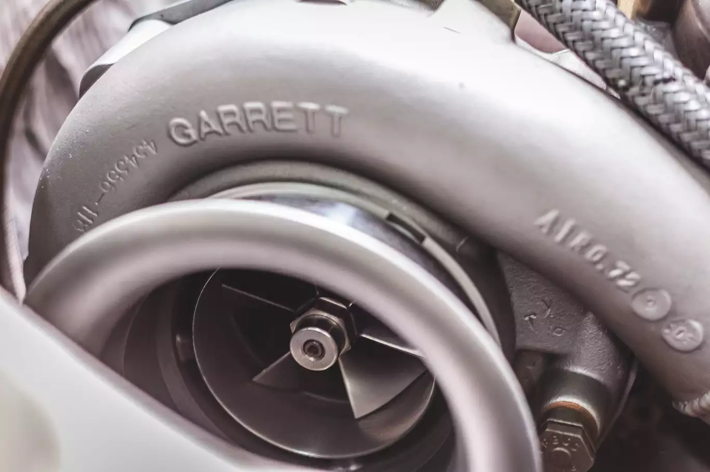
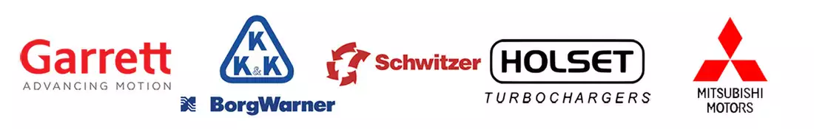

РЕМОНТ ТУРБИН В БРЕСТЕ
Компания Turbomotors уже более 10 лет специализируется на ремонте турбин всех популярных марок легковых автомобилей, а так же фургонов, грузовиков, дорожно-строительной и сельскохозяйственной техники.
Наши специалисты прошли обучение у изготовителя турбокомпрессоров BorgWarner Turbo Systems и знают толк в диагностике неисправностей турбин KKK BorgWarner, GARRETT, Schwitzer, HOLSET, Mitsubishi и других производителей.
НАШИ ПРЕИМУЩЕСТВА

БОЛЬШОЙ ОПЫТ
Более 10 лет мы занимаемся ремонтом турбокомпрессоров и постоянно повышаем свои знания.

КАЧЕСТВО
Мы используем профессиональное ремонтное и диагностическо-испытательное оборудование от европейских производителей.

ГАРАНТИЯ
Мы отвечаем за свою работу. Поэтому на реставрацию турбины даём гарантию 1 год без ограничения по пробегу.

РЕМОНТ ПОД КЛЮЧ
Наши мастера сделают диагностику, демонтаж, ремонт и монтаж турбины прямо на месте.

ЭКОНОМИЯ
Мы предоставляем оптимальные цены на комплектующие и техническое обслуживание.

НАМ ДОВЕРЯЮТ
Мы сотрудничаем с автосервисами, которые привозят турбины своих клиентов для ремонта нам.
РАБОТАЕМ С РЕГИОНАМИ
Заберём вашу турбину из другого города для ремонта на нашем сервисе.

БЕЗНАЛИЧНЫЙ РАСЧЁТ
Заключив договор, мы с радостью произведём ремонт вашего легкового или грузового транспорта.
ПРИЧИНЫ ВЫХОДА ТУРБИНЫ ИЗ СТРОЯ

- Трещина во впускном коллекторе, отсутствие герметичности
- Инородный предмет во впускном коллекторе
- Утечка выхлопных газов между коллектором и турбокомпрессором
- Ограничен подвод воздуха к турбокомпрессору
- Давление масла ниже уровня
- Увеличенное давление картерных газов
- Клапан управления турбиной не исправен
- Люфт электронного актуатора выше нормы
МЫ РЕМОНТИРУЕМ ТУРБИНЫ ДЛЯ ДИЗЕЛЬНЫХ И БЕНЗИНОВЫХ ДВИГАТЕЛЕЙ ВСЕХ МАРОК И МОДЕЛЕЙ

ЧАСТЫЕ ВОПРОСЫ НАШИХ КЛИЕНТОВ
Производите ли вы монтаж/демонтаж турбокомпрессора?
Да. На нашем сервисе мы производим ремонт турбины под ключ. Вы пригоняете автомобиль, мы производим демонтаж, ремонт и балансировку турбины с последующим монтажом. Все работы мы стараемся выполнить в кратчайшие сроки
Какова стоимость ремонта турбины?
Стоимость ремонта турбины величина относительная – такая же, как и средняя цена за поход к стоматологу. Определяющим фактором цены является правильная диагностика неисправностей турбокомпрессора. Она может составить 100 рублей, если ремонт обойдётся только чисткой геометрии, а может и превысить 500 рублей, если будут заменены все основные узлы турбины.
Каковы условия гарантии на ремонт турбины?
На ремонт турбины мы предоставляем гарантию 1 год без ограничения пробега. Подразумевается, что турбина будет установлена правильно и вы будете соблюдать рекомендации по эксплуатации автомобиля с турбонагнетателем.
Могу ли я забрать отремонтированную турбину либо автомобиль в выходной день?
В некоторых случаях мы можем войти в положение клиента и выйти на работу в выходной день для выдачи отремонтированной турбины либо транспортного средства.
Предоставляете ли вы рассрочку на ремонт турбины?
Сейчас мы работаем над этим вопросом. Уже в ближайшем будущем мы будем предоставлять возможность оплаты ремонта турбины картами рассрочки.